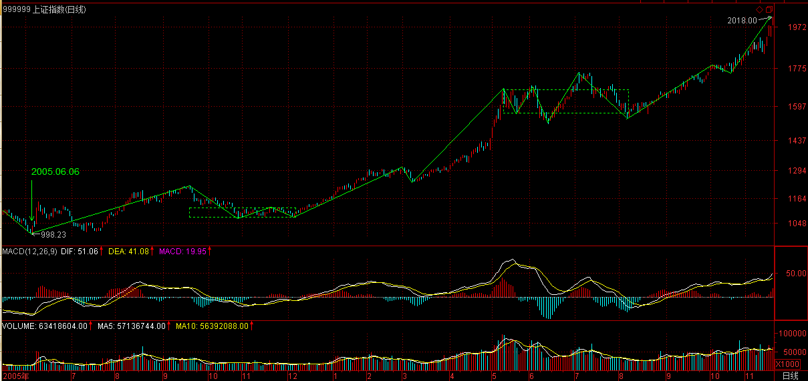
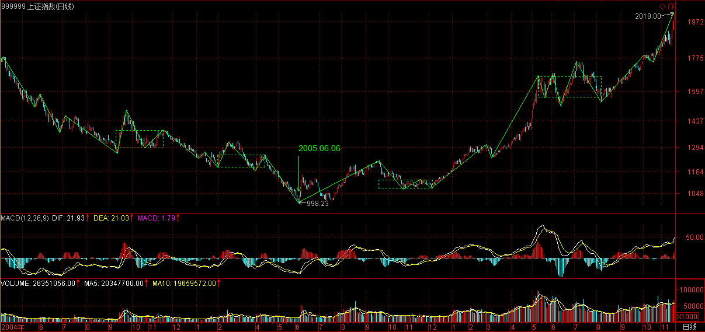
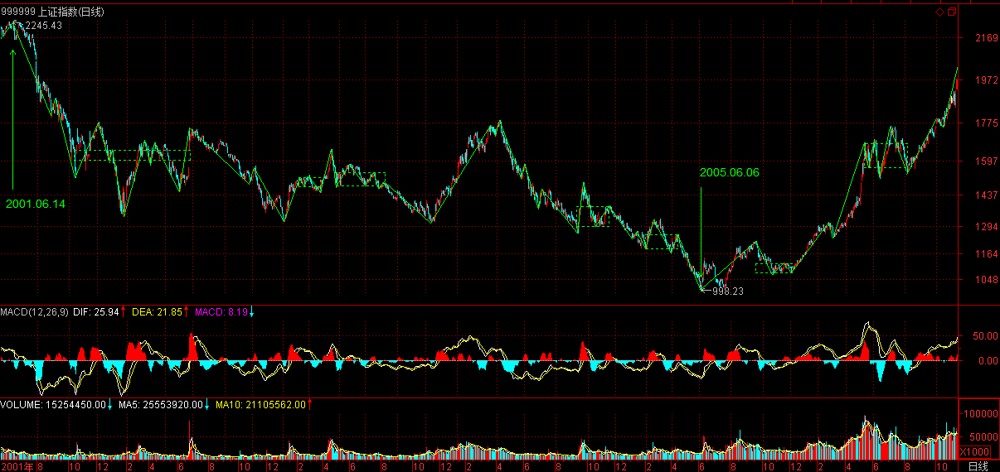
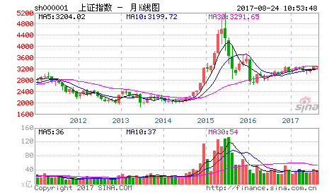

(2006-11-20 12:00:31)
中国人喜欢说反话，面首，“面”，绝不是首位的。选面首，先看面，终要看“里子”。何谓“里子”？就是“G点为中心，拒绝ED男！”这也是本ID关于投资的警世之言。拿投资来忽悠的人，总爱编一些关于“面”的神话。诸如基本面、技术面、心理面、资金面，这面那面，都如同面首之“面”，不过是进而“里子”的借口。没有“G点为中心，拒绝ED男！”的“里子”，这面那面又有何意义？【韶山映山红】“面”是表面现象，“里子”是本质。用现象掩盖本质是自然进化的伪装，无处不在，所以，要学会透过现象看本质。】
投资的结果很简单，就“输、赢”两种。【韶山映山红】现象可以掩盖本质，结果会暴露一切。】
所有关于投资的理论把戏，都企图通过控制某种“输入”而把“输”这结果给去了。因此一切相关的理论前提就必然建立在这样一个逻辑假设之上：输入与输出间被某种必然的逻辑关系和因果链条所连接。【韶山映山红】如果是一因一果关系，控制输入就能控制输出。如果是多因一果关系，控制某些输入就不能控制结果，控制所有输入是难以逾越的障碍。】
而该逻辑假设，相当于说“面首的面和其里子有着必然的逻辑关系。”如果这都能成立，那么帅男就一定G点澎湃、满面胡子的糙爷就一定非ED男，出去扒几个面首看看就知道这类假设是何等荒谬。
然而，现实中，企图跳过“面”而直捣“里子”，同样是一种荒谬的幻想。
即使“面”和“里子”没有任何必然的联系，但现实依然只能从“面”到“里子”。那种企图否定一切“面”的，企图直接就“里子”就G点的，不过是把某种“面”当“里子”了。这种人，终生被骗而不知，就像把“叫床分贝”当高潮指标一样可笑。【韶山映山红】任何本质都存在表面现象，没有现象的本质也不存在。】
投资领域，没有任何理论可以描述这种从“面”的输入到“里子”输出的必然关系，因为这种关系根本不存在。【韶山映山红】投资领域没有一因一果关系，都是多因一果关系。但是人类的普通思维模式总是一因一果的模式。所以缠师说，不要让你的脑筋动了你的眼睛。】“相信你的眼睛，不要相信你的脑筋，更不要让你的脑筋动了你的眼睛。”】
但人只要介入这种投资游戏，其介入就必然要以某种方式进行，相应地，其后必然有着某种理论、信念的基础。【韶山映山红】不论对错，买卖总是有原因有理由的，也就是说，不管有没有学习某些成型的理论，每一个人都有事实上的“某种理论、信念的基础”。】
而正因为绝对正确的不存在，因此反而使得各种理论、信念基础之间有了比较的可能。任何好的投资理论，最终都只面向“里子”，就如同一个好面首，必须最终以其G点的澎湃度来证明其优秀。【韶山映山红】衡量投资理论好坏的依据就是对规律和本质的揭示程度。】
相应的，投资市场最重要的指标就是高潮度，一个长期没有高潮的市场，就如同没有G点的石男，是不值得任何关注的。【韶山映山红】这里说的“高潮度”在股票市场就是上涨的程度。】
期待一个石男变成一个优秀的面首，那是牧师的工作，而投资市场不需要牧师。一个市场能进入可投资的视界，首先要显示其G点的萌动，否则还是一边凉快去吧。【韶山映山红】上涨前的启动动作就是“可投资”的“萌动”。】
世界，永远不缺G点萌动的男人去面首，同样，在世界总的市场体系中，永远不缺高潮萌动的市场。但大多数的散户，就喜欢泡石男，以为石男没有攻击性就安全了，以为长期没有高潮的市场就一定安全。【韶山映山红】典型的说法就是抗跌性好。缠论讲究的是买点买、卖点卖，不参与调整走势，所谓抗跌只不过是犯错误之后自欺欺人的遮羞布。】
有多少人因此而独守空房、耗费青春，整天听着看着别人高潮不断，最终寂寞难耐，走向另一个极端，见高潮就扑上去，如飞蛾一样死掉。【韶山映山红】另一个极端是追涨。缠论的买点都在下跌中产生。】
本ID曾言“像搞男人一样搞股票，像做爱一样做股票”。搞男人、做爱，最终都是要获得其高潮，最终采阳而补。投资也一样，通过市场的高潮是要赚取其利润，是采利而补。可惜，市场上的人，大多数都让人当阳给采了，可笑可怜。要采阳而不要被采，这就是和面首游戏的第一准则，而投资市场的道理也是一样的。【韶山映山红】我们想要的是收益，市场想要我们的本金。】
采阳，过熟不行，过生也不行，必须把握其火候。阳生，必有其萌动，必须待其萌动之后才可介入。具体对于股票来说，按其是否萌动的标准把所有股票动态地进行分类，一种是可以搞的，一种是不能搞的，将你参与的股票限制在能搞的范围内，不管任何情况，这是必须遵守的原则。【韶山映山红】炒股，首先要有纪律，然后要守纪律。】
当然，搞的分类原则，各人可以有所不同。
例如，250天线以及周线上的成交量压力线的突破；【韶山映山红】250天线就是前面课程说的突破年线，这里加上了“周线上的成交量压力线的突破”的条件。】
资金量不大且短线技术还可以的，可以把250天线改成70天线、35天线，甚至改为30分钟图里的相应均线；【韶山映山红】这里的70天线、35天线的数字是怎么来的？待确认。均线系统的方法是长期均线改短期均线，直到降低Ｋ线图的级别。缠论的方法是降低操作级别。】
对新股，可以用上市第一日的最高价作为标准；【韶山映山红】现在这个方法失效了。】
还有，就是接近安全线的股票，例如在第六期里，本ID给出的一个带认沽权怔的认购权怔介入的安全线标准；【韶山映山红】现在还有什么“安全线标准”？以后研究。】
而对于有一定水平的人，识别各种空头陷阱，利用空头陷阱介入是一个很好的方法，这种方法比较专业点，以后专门说。【韶山映山红】背驰，是正式缠论的内容。】
男人只有两种，能搞的和不能搞的；市场也只有两种，能搞的和不能搞的。必须坚持的是，不能搞的就无论发生什么情况都不能搞，除非能达到某种能搞的标准而自动成为能搞的对象，就像用ED把男人进行分类一样，ED男只有非ED后才有进入被搞侯选集合的可能。一旦被搞的分类原则确定，就一定要严格遵守“只搞能搞的”原则。【韶山映山红】市场的进出是最底层的纪律。】
可惜，这样一个简单的原则，绝大多数的人即使知道也不能遵守。人的贪婪使得人有一种企图占有所有机会的冲动，就如同看到街上的所有男人都企图上去扒光他们一样，这种人叫“花痴”，“花痴”在投资市场的命运一定是悲惨的。【韶山映山红】非不知也，实乃不为也。只有极少数人可以守纪律。】
在投资市场，定好“能搞”的“G点萌动”标准，相应选出来的，至少不是ED男了。而接下来，就要防止其“早泄”。这里找到有关“早泄”的医学定义：男子性功能障碍中仅次于阳痿的最常见的症状，是射精障碍中最常见的疾病，发病率占成人男性的35%一50%。投资市场里，这“早泄”的比例和市场总体强度有关，在熊市中这比例至少是80%以上，而牛市中这个比例就小多了，大概就30%。【韶山映山红】牛市尚且有30%的早泄比例，也可以说是相当的高了。熊市高达80%的早泄，那就纯属赌运气的刀口舔血了。两者相差50%，那么，中位在55%，也就是说，整体上的早泄是大概率。】
无论是选一个好面首还是一个好股票，把“早泄”的一类给筛出去可是最重要也是最困难的一步，很多所谓的高手，就死在这一步上。
关于这问题，将在下一讲中详细论述。【韶山映山红】这里说的是选股如何防止“早泄”。在走势类型分析中，早泄实际上就是小转大，二卖是解决之道。】继续分析。】
【韶山映山红】南无月光如来注：
这一章实际上是说如果寻找能操作的股票。前提是你自己有一套可行的操作系统。然后严格执行这一标准。该进就进，该出就出。而这套操作系统的设立，有各式各样的方法，你只要精通一样，并严格执行，就可赚钱。
实际操作过程中，你得关注该股走势的强弱，一旦在你操作的级别上看到走弱的情况，你就应该先出来。不是一厢情愿的爱到底。
缠师所说的空头陷阱买点：就是背驰买点，也就是第一买点。
缠师用选面首比喻选好股， 当然比用美女作喻贴切。男性为阳，为刚，为突吧，而且男性有不应期。
http://blog.sina.com.cn/s/blog_60c36c130100i04l.html 】
今早上2000点了，抛弃孔二爷一天也是应该的。孔二爷明天继续。

2006-11-20 12:07
那些赚了指数亏了钱的，少安毋躁，前面说过了，这只是牛市的第一阶段，以后机会多了去了，还是先把技术学好，否则死都不知道怎么死的就不好了。

2006-11-20 12:09
缠中说禅
不要用你的想象代替现实。股市里的牛人每年都有，死去的牛人更多，市场的第一原则就是生存，只要你30年后还能活下来，自然就是最大的牛人。
本ID2001年到2005年，4年，从来不看股票。但从2005年6月以后天天看，等哪天本ID不看了，你们可要小心了。

2006-11-20 12:44
缠中说禅
开盘了，先下，再见。
2006-11-20 12:44
缠中说禅
文章提交者：耐心等待
楼主认为大盘能涨到多少点？
=============
预测是股评干的事情，本ID只对赚钱感兴趣。
而且大盘跌也可以挣钱，预测它干什么？
2006-11-20 15:44
缠中说禅
罗锅 2006-11-20 15:31:06
10000点！！！！！！冲！！！！！！！！！
===============
那是迟早的事情
2006-11-20 15:45
缠中说禅
太阳没了。 2006-11-20 15:01:46
博主的签名中的那个太阳怎么没有了？
===========
有，你的电脑有问题。
2006-11-20 15:49
缠中说禅
各位慢慢玩，先下了，再见。
2006-11-20 15:56
缠中说禅
各位如果转载，请注明出处，也好勾引更多的人来这里，本ID从不虚伪，本ID当然不介意来这里的人比去孔男人那里还多。
2006-11-20 16:00
缠中说禅
这不像《论语》详解，说好要出书的，所以谢绝转载。但各位如果转载，也请注明出处，好勾引更多的人来这里。本ID从不虚伪，本ID当然不介意来这里的人比去孔男人那里还多。
2006-11-20 16:02
缠中说禅
各位慢慢玩，先下了，再见。
2006-11-20 16:03
缠中说禅
[匿名] xof_fox
2006-11-20 19:10:44
请教楼主：“只要你30年后还能活下来，自然就是最大的牛人。”，假如一个人生存了30年，但前25年都是残败，就是后5年风光，这也叫牛人吗？不好意思我这问题有点钻牛角尖。
=================
牛人，一般是指站在潮流之巅的。在投资市场里，整体的失败是一次都不能发生的，只要发生一次，基本就翻不了身了。个别的失败是允许的，但不能影响大局。
最早时几千万就可以当庄家了，现在几千万连大散户都算不上，在投资市场中，一次的跌倒，终生都追不回来，基本只能在后面跟着玩了。而在后面跟着玩，怎么都算不了牛人。
2006-11-20 20:18
(2006-11-21 12:00:00)

《论语》详解：给所有曲解孔子的人（33）
子曰：人无远虑，必有近忧。
杨伯峻：孔子说：一个人没有长远的考虑，一定会有眼前的忧患。
钱穆：先生说：一个人若不能有久远之虑，则必然有朝夕之忧。
李泽厚：孔子说：人没有长远的考虑，必然会有近在眼前的忧愁。
详解：
字面上，这是很简单的一章；字面后，就不那么简单了。理解的关键在于：何谓远虑？何谓近忧？三位的解释都非透彻之论。以眼前、朝夕的忧患、忧愁为“近忧”，长久的考虑为“远虑”，实不知何谓“远虑”、“近忧”矣。
“远”，深远、深奥，同于“习相，远也”，和“习相”相关，脱离“习相”无所谓深远、深奥，不过幻想而已。“习相”，先要明其“相”，明其“相”必先明其“相”之位次，明其“相”之位次，必对其“相”的当下逻辑关系有一明确把握。而现实的存在，不离时空，现实逻辑关系也必构成相应的时空关系，对现实逻辑关系的把握，须从这现实的时空关系中切入。“虑”，审察、思虑、谋划。“虑”，不是哈姆雷特式的，而是审察、思虑、谋划的统一，三者缺一不可，而最终必须落在行动上，没有行动的“虑”也不过是幻想而已。上面的所有工夫，都构成“习”的一环，但仍不是“习”的全部。“习”的关键在于对现实逻辑关系把握后的改变，是转现实而不是被现实所转，只有这样，才勉强算得上“远虑”。就算是炒股票这么小的事情，也必须有其“远虑”，否则没有对市场的深刻把握，也必然导致其“忧”之“近”，这点，观察一下那些亏损累累的人的行为就清楚了，那都是些被市场所转的典型。
“近”，缠附，同于“性相，近也”；“忧”，忧患,祸患。“近忧”，缠附忧患、祸患，为何如此？因为“人无远虑”。忧患、祸患的种子是当下种下的，每一思想、行为，都在种下种子。而种子并不一定即刻萌芽，把“近忧”解释成眼前的忧愁、忧患，是对此不能明了。现实中，很多没有“远虑”的事情，所谓运气来了挡都挡不住，眼前一片大好，加速上涨，何来眼前的忧愁、忧患？如此，难道就没有“近忧”？这，显然是不对的。人的行为，必须从其苗头下手，不想吃恶果，最简单的方法就是不要种下其种子，忧患、祸患的种子一旦缠附，一有机会就会萌芽，就要结果。别以为可以用任何方法可以消除这种子，种子一旦种下就是无位次的，准确说，相对于现实系统来说，种子是无位次的，任何现实的把戏都消灭不了种子，种子不一定在眼前发芽，但不发芽只是机会不成熟，一旦成熟，逃都逃不掉，眼前看不到、没迹象的忧患、祸患，往往才是致命的。而这，才是真正的“近忧”。
无“远虑”与“近忧”之间的关系，孔子给了一个“必有”的强判断，由此可见对此的重视与强调。这话可不单单针对个体的人，家、国、天下，同样成立。“人不知”的社会，归根结底就是“人无远虑”的社会，其中的每个人、每个家庭、每个地区、每个团体、每个国家等，都处在“人无远虑”之中，由此种下无数“忧”的种子，忧患、祸患种子因而“近”而缠附。要使得“人不知”的社会成为“人不愠”的社会，首先要改变的就是这个“人无远虑”。站在对社会发展的认识上，马克思对社会发展的“人无远虑”进行了彻底的改变，马克思对资本主义社会的解剖，就是对现实社会当下之“相”的“远虑”，没有这“远虑”，就没有其“习”。马克思关于社会发展的五阶段理论，其基础就是对现实“人与人”、“人与社会”以及“人与自然”三重基础逻辑关系的完全分类，不明白这个，是不可能明白其“远虑”的。
一个能“远虑”的人、家、国、天下，必须有其相应的“远虑”能力，社会必须发展到一定位次，显示出一定位次之相，才可能有其相应的“远虑”。任何的“远虑”都是和一定位次的社会相连的，离开了一定位次的现实社会，“远虑”也无所谓“远虑”了。但社会的现实结构是有深浅之分的，有些“远虑”可以完全洞穿整个社会的深层结构，这样的“远虑”就构成了人类文明历史最珍贵的部分，孔子、马克思，都成为这最珍贵部分的中流砥柱。后人经常以孔子两千多年前说的话怎么可能对现在有用，现实已经改变了等等理由来搪塞，却不知道有些“远虑”是可以洞穿社会结构的深层，而社会结构的深层，在两千多年来，根本就没有任何的改变。因此，孔子的“远虑”，依然适合今天。马克思的，当然也一样。
缠中说禅白话直译
子曰：人无远虑，必有近忧。
孔子说：人没有深远的审察、思虑、谋划，必然缠附祸患。
（待续）
严禁抄袭，违者必究
缠中说禅
孔二爷火锅店继续开张，各位吃好。
2006-11-21 12:05
缠中说禅
明天继续写一下股票，题目：防治”早泄“的数学原则。
孔二爷后天继续宠幸
2006-11-21 12:06
狂歌大破缠中说禅迷魂阵之一
“无所位而生其本、无所本而生其位”
缠人曲解《论语》时，每每说到高兴处就会来些诸如“不同而大同”、“与天其时，天与其时”、“无所位而生其本、无所本而生其位”等让人莫测高深的句子。缠人究竟用它们来表达什么意思呢？我们不要为表现所迷惑。现在我们就来讨论一下“无所位而生其本、无所本而生其位”这句话。
缠人文章多次提到“无所位而生其本、无所本而生其位”，那么这句话究竟什么意思呢？“本”者，“根本、本原”也，“无所本”就是说不以别的东西为其本；“位”者，就是指变化的位次、状态。“无所位”就是说事先不去假定任何的位次、状态，或者说根本不需要有什么位次、状态。整句话就是说这个东西不是因为其它什么东西才变成这样的，它本来就是这样子的。也就是说这个东西是无条件存在的。大家不妨猜一猜，这个神奇的东西会是什么呢？答案只有一个，就是上帝。大家都知道人是人他妈生的，鸡是鸡它妈生的（当然，鸭也是鸭它妈生的），就是不知道上帝他老人家是从哪蹦出来的。但是在缠人眼里还有第二个答案：“圣人之道”。接下来我们来看看是否如此。
按缠人的说法：“圣人之道”、“善人之道”是大道，更是现实之道，无位可本，又何来“本位”？正因为无位可本，才可以无所位而生其本、无所本而生其位。这，才是真正的大道、现实之道（缠中说禅《论语》详解：给所有曲解孔子的人（24））。
对这段话大家按照本文最开始对“无所位而生其本、无所本而生其位”的分析整理一下思路是不是很容易就可以看出缠人自相矛盾的地方：既然是现实之道，怎么能“无所本而生其位”？它明显是以现实为本位，这现实就是人类社会发展到了一定的阶段所具有的一切形态的总和，也就是说人类社会从原始社会发展到奴隶社会后才有了“圣人之道”产生的可能，男猿人、女猿人的时候是不用什么“圣人之道”的。这可能也是缠人特别痛恨男猿人的原因之一（但是这不能怪男猿人吧？你以为他愿意啊）。另外，按照缠人的说法，到了“人不愠”的社会圣人们也会失业的。总而言之，缠人所说的“圣人之道”只能是社会发展到了一定阶段的产物，它不是先验的，无条件的，是有所本位的。缠人可能没意识到“无所位而生其本、无所本而生其位”这句话威力是如此之大，一向喜欢语出惊人的她搬起石头砸了自己的脚。
－－－请进狂歌博客继续
2006-11-21 12:13
缠中说禅
[匿名] nn 2006-11-21 12:24:23
楼主今天的解释虽然将那些大家的解释扩展了一下,本意其实与他们是一样的,还是支持一下;另外想问一下楼主,那个狂哥解你的“无所位而生其本、无所本而生其位”这句话意思对不对啊?
==============
完全理解错误。还有他对现实的理解更是错的离谱。现实不是本位，如果现实本位，还要改造现实干什么？要转现实而不是被现实所转，马克思不单单是指出要从现实出发，更要改变现实。
2006-11-21 12:28
缠中说禅
罗锅，说话可以温和点。这只是本ID的建议，本ID不干预任何人，只要他的发言不被新浪删掉就可以保留。
要开盘了，先下，各位慢慢看。再见。
2006-11-21 12:41
缠中说禅
傻妞 2006-11-21 21:15:16
“高禅”，听了你的股道禅论，真的很佩服！但还是云里雾里的，我是一个刚起步的散户，我问一个简单的问题，K线图中哪条是年线？千万别大笑，我只认得5，10，20日线，请指教！另外我买的东方金钰（原G多佳600086）什么时候会涨啊？能否借喝水的功夫分析分析，谢谢，等回信！
===================
本ID不是股评，说股票只是本博客的一个方面，纯粹是希望来这里的人能学点东西。本来你的问题是不应该回答的，因为本ID怕一旦开始回答问题，这里就成了咨询台了。但看你说的诚恳，本ID破例一次。年线一般指250日的均线，但在各种周期的图表上都可以用上。例如分钟图、小时图、周线图、月线图等都可以。具体如何设置找附近的人问问。
至于你说的600086，它已经长了很多了，连续拉了8个月的阳线从1块多长到7块多，出现调整是最正常不过了。关键是你买的位置，如果你是最近才买的，对面临的调整风险就要有所承受。本ID现在只能告诉你它现在的具体状况。它目前最大的长线压力是70月均线，03年时曾碰该线后从13元一直下跌到1元，所以该线是该股最重要的长线关口，目前在8.36元，每月以0.3元下降。中线关键的点位是5.9元，该位置不能有效跌破，否则调整的幅度会很大。目前可以看成是5.9元到7.2元的一个箱形调整，可以按照箱型进行短线操作，就是所谓的高抛低回补。中线等待突破方向的选择。
但还是请各位注意，不要轻易介入涨幅过大的股票。要从最开始就学会用尽量小的风险换取尽量大的利润。
2006-11-21 22:00
【韶山映山红】缠师这个问答就是上一课有，这一课也有。回答了两遍。原样保留。】
缠中说禅
冰火 2006-11-21 22:05:15
但还是请各位注意，不要轻易介入涨幅过大的股票。要从最开始就学会用尽量小的风险换取尽量大的利润。
============================
我还以为高人都是只做最后的疯涨那一段呢。没想到楼主这样的大侠也这么规避风险。
========================
要长期胜利，就一定要坚持用最小风险换取最大利润，风险是第一的，这里没有什么高低之分。亏损是按百分比的，一百亿和一百万，亏了百分百，都是零。
人弃我不一定取，人抢我一定给。
2006-11-21 22:05
【韶山映山红】缠师这个问答就是上一课有，这一课也有。回答了两遍。原样保留。】
缠中说禅
[匿名] 冰火 2006-11-21 22:05:15
但还是请各位注意，不要轻易介入涨幅过大的股票。要从最开始就学会用尽量小的风险换取尽量大的利润。
============================
我还以为高人都是只做最后的疯涨那一段呢。没想到楼主这样的大侠也这么规避风险。
========================
要长期胜利，就一定要坚持用最小风险换取最大利润，风险是第一的，这里没有什么高低之分。亏损是按百分比的，一百亿和一百万，亏了百分百，都是零。
人弃我不一定取，人抢我一定给。
2006-11-21 22:06
【韶山映山红】缠师这个就是又回答了一遍。原样保留。】
缠中说禅
[匿名] 冰火 2006-11-22 00:59:00
除非行情特别不好，否则是不会让认沽兑现的，因为不兑现，这就是一个空头支票，而兑现是要掏真金白银的
===================
这句话我尤其看不明白，权证一旦发行了就是有法律效力的，企业怎能和投资者买认购权证一样赖皮不兑现？还有就是难道企业有操纵权证价格的能力？我的问题太弱智了，俺承认俺超级菜，但不问清楚我真的睡不瞑目啊！！
====================
对不起，刚上来。股价升破认沽价，认沽权证就是废纸，就不用兑现了，因为没人回去兑现。例如，认沽价3元，现在股价是4元，没人会用4元的股票去换3元的人民币。
好，开盘了，看股票吧，先下，中午发有关股票的帖子。再见。
2006-11-22 09:19
本课目录
教你炒股票08：投资如选面首，G点为中心，拒绝ED男！《论语》详解：给所有曲解孔子的人（33）子曰：人无远虑，必有近忧。